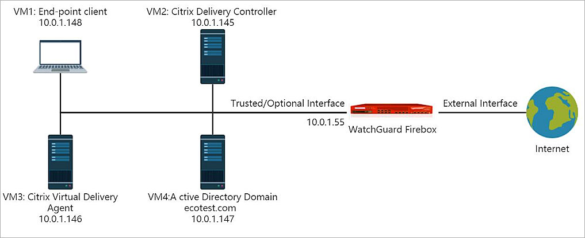
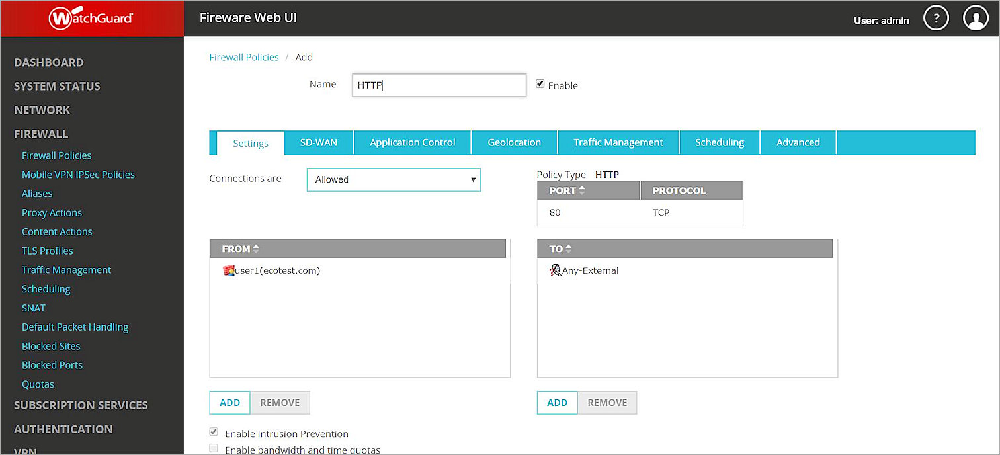
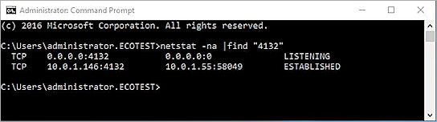
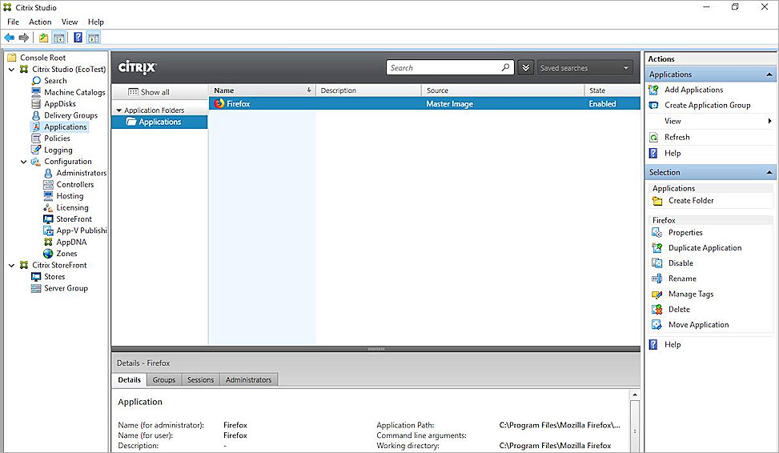
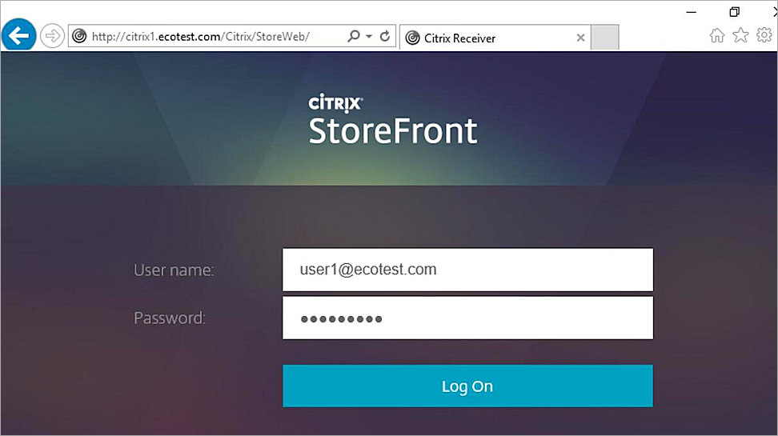
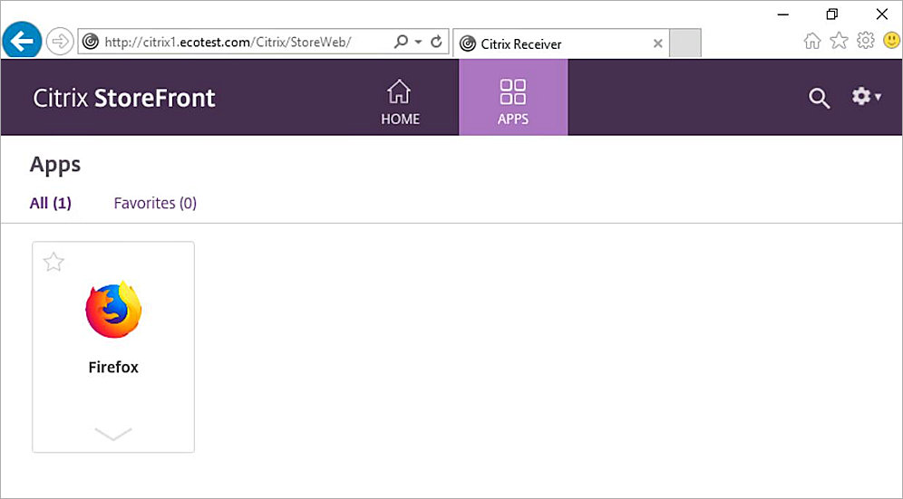
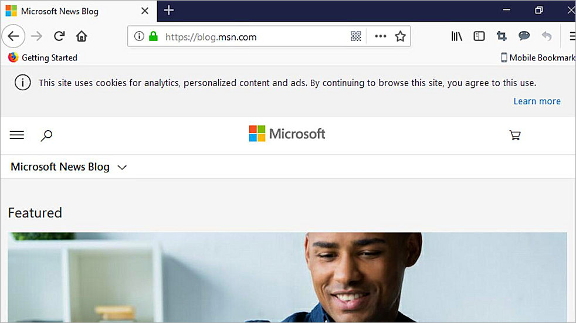

This document describes how to integrate Citrix Virtual App with your WatchGuard Firebox to support end-point client automatic authentication through the WatchGuard Terminal Services Agent (TO Agent). The Firebox enforces policies for traffic from endpoint clients after a user authenticates to the Firebox from the endpoint client with a specified user name and IP address.
Platform and Software
The hardware and software used to complete the steps outlined in this document include:
- Firebox with Fireware v12.3.1 installed
- Citrix Virtual App 7.1811.1 and other software required for this integration installed on four virtual machines as listed in the table below
|
VM# |
Operating System |
Components |
|---|---|---|
|
1 |
Windows 10 |
End-point client with Citrix Workspace installed |
|
2 |
Windows Server 2016 Standard |
Citrix Delivery Controller, Studio, Director, License Server, StoreFront |
|
3 |
Windows Server 2016 Standard |
Citrix Virtual Delivery Agent on the Master Image, WatchGuard TO Agent |
|
4 |
Windows Server 2016 Standard |
Active Directory domain and run DNS and DHCP service |
Configuration
To complete this integration, you must first deploy the Citrix Virtual App 7.1811.1 software shown in the Platform and Software section.

VM Configuration Notes:
- All VMs must be members of the Active Directory (AD) domain. In our integration the VMs get an IP address from a DHCP server on the AD server. The DHCP server could also be enabled on the Firebox interface or through DHCP relay configured on the Firebox interface as long as FQDN is working for all VMs.
- The default gateway for all VMs must be the IP address of the Firebox trusted or optional interface the network connects to. In our example integration, the IP address is 10.0.1.55.
- FQDN must work.
- WatchGuard Terminal Services Agent (TO Agent) and the Citrix Virtual Delivery Agent (VDA) must be installed on the same server.
For information about how to set up the Citrix Virtual App 7.1811.1 environment, see the Citrix Virtual App 7.1811.1 Installation Guide.
In this document, we describe how to set up WatchGuard Terminal Services Agent (TO Agent) to work with Citrix Virtual App 7.1811.1 so the Firebox can authenticate end-point clients.
Set Up Active Directory Domain Server
Add a domain user in AD server. in our integration, the user name is user1
Set Up the Firebox
Enable Terminal Services on the Firebox
You must add the TO Agent IP address to the Firebox configuration.
- Log in to Fireware Web UI.
- Select Authentication > Terminal Services.
- Select the Enable Terminal Services support check box.
- In the text box below the Agent IP list, add the IP address of the machine where the TO Agent is installed.
In our example integration, the TO Agent is installed on VM3, at 10.0.1.146. - Click Add to add the specified IP address to the list.
- Click Save to save the configuration.

Configure the Active Directory Server on the Firebox
- Select Authentication > Servers > Active Directory.
- Click Add.
- In the Domain Name text box, type the name of your Active Directory domain.
- Click Next.

- In the Server Address text box, type the domain name or IP address of your Active Directory server.
- Click Next.

When you finish with the setup wizard, your Active Directory server is added.


Add Active Directory Authentication Users
You must add the Active Directory users on the Firebox before you can add them to a policy.
- Select Authentication > Users and Groups.
- Click Add.

- For Type, select User.
- In the Name text box, type the name of a user that exists in the Active Directory domain. The user name is case-sensitive. In our example integration, the user name is user1.
- From the Authentication Server drop-down list, select the authentication server domain name.
- Click OK.
- Click Save.
Create a Policy for Authenticated Users
To add a policy for HTTP traffic from authenticated users:
- Select Firewall > Firewall Policies.
- Click Add Policy.
- From the Packet Filter drop-down list, select HTTP.
- Click Add Policy.
- Configure the policy to allow connections from Firewall User user1 to Any-External.
- Use the default settings for the other options.

- Click Save to save the policy.
Install the WatchGuard Terminal Services Agent
To install and verify the WatchGuard TO Agent:
- In a web browser, navigate to https://watchguardsupport.secure.force.com/software/SoftwareHome.
- From the Show downloads for drop-down list, select your device.
- Download the WatchGuard Terminal Services Agent software.
- Install the WatchGuard TO Agent on the server where the Citrix Virtual Delivery Agent is installed. In our example, the TO Agent is installed on VM3. For detailed instructions on how to install and configure the Terminal Services Agent, see Fireware Help.
- Use the netstat command to verify the TO Agent works correctly. If the TO Agent works correctly, the netstat output should look similar to the example shown here.

Set Up Citrix Virtual App
Publish Apps on Citrix
For our integration example, we created a machine catalog and published Firefox.
- We use the Master Image on VM2 to create a Machine Catalog called <windows 2016 for Eco>.

- We created a Delivery Group to publish applications with the Machine Catalog <windows 2016 for Eco>.

- We published Firefox.

Test Automatic Client Authentication
- On a client machine that has Citrix Workspace installed, open Internet Explorer and go to the default Storefront URL: http://<servername>/Citrix/StoreWeb. In our example integration, the client machine is VM1, which has Windows 10 installed.
- Log in as the domain user user1.

- Select Apps to see all published applications.

- Click the Firefox app to launch it.
The Firefox application window appears. - Type the URL for an internet site to visit. In our example, we visit blog.msn.com.

- To verify that the user has authenticated, in Fireware Web UI, select System Status > Authentication List.
The user name appears on the Authenticated Users list.

Because the user is authenticated, the HTTP traffic for this user is enforced by the HTTP policy configured to allow traffic from this user.
To make sure that the Firebox does not allow outgoing traffic from users who are not authenticated, you must disable or remove the default Outgoing (TCP-UDP) policy that allows traffic from unauthenticated users. If you remove the Outgoing policy from your device configuration file, you must add policies to your configuration that allow outbound traffic. You can either add a separate policy for each type of traffic that you want to allow out through your firewall, or you can add the TCP-UDP packet filter or TCP-UDP-proxy policy.
For example, if you remove the Outgoing policy, and you want to allow authenticated users on your network to connect to websites, you must add an HTTP or HTTP-proxy policy for port 80, an HTTP or HTTPS-proxy policy for port 443, and a DNS policy for port 53 to allow DNS query resolution.